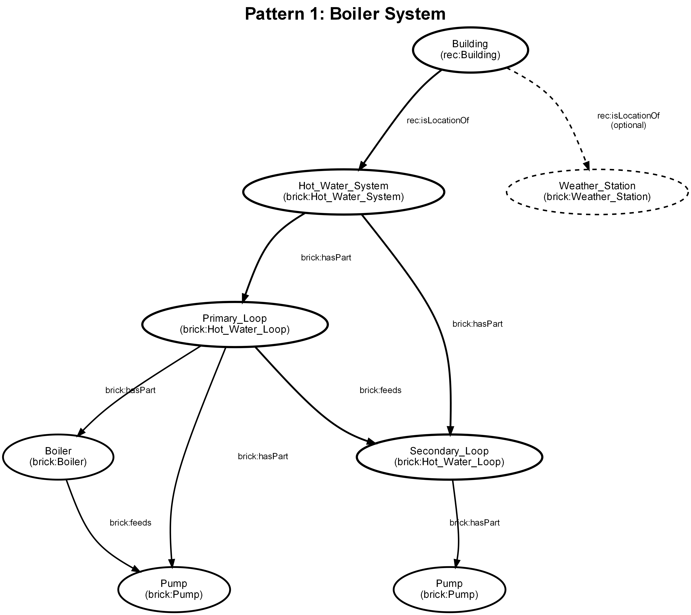
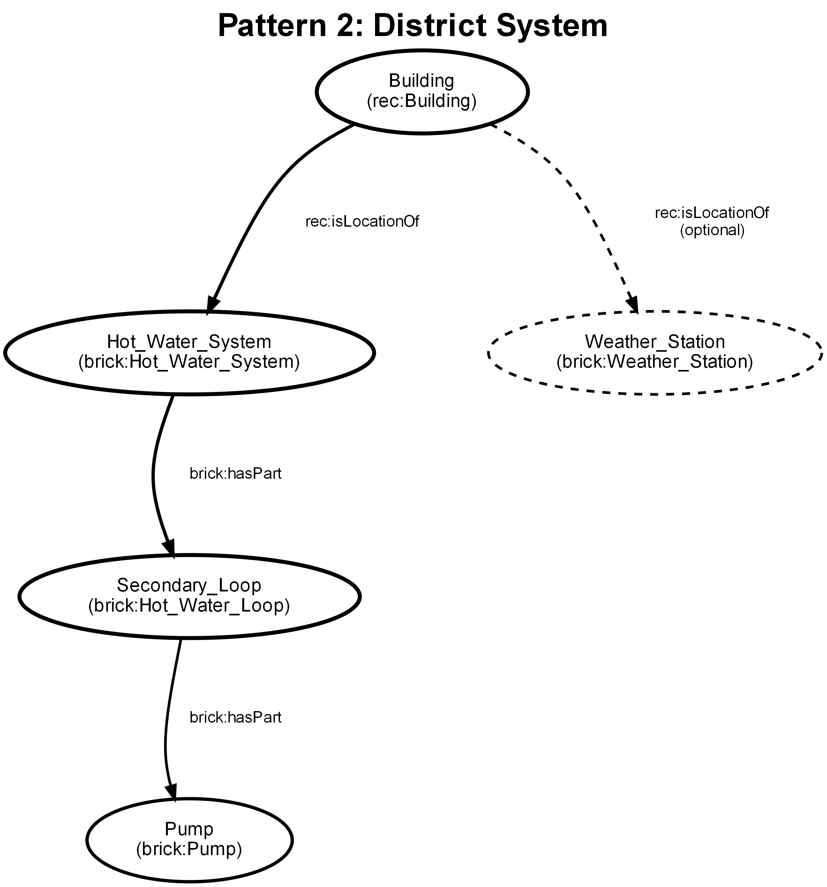

Step 3: SPARQL Query & qualify Function¶
Learn SPARQL basics and implement building qualification.
1. Understanding SPARQL for Brick¶
SPARQL queries RDF data (Brick models use RDF).
Basic Pattern:
Example - Find all temperature sensors:
Key Patterns:
- ?variable - Variable (like wildcards)
- rdf:type - "is a type of"
- rdfs:subClassOf* - Includes subclasses
- brick:hasPart - Equipment has point
- FILTER() - Filter results
Learn More: - Brick Docs: https://docs.brickschema.org/ - SPARQL Tutorial: https://www.w3.org/TR/sparql11-query/ - Brick Studio: https://brickstudio.io/
2. Visualize System Architecture¶
Before writing SPARQL, understand your target system architecture.
Reference Diagrams: See docs/Figures/Development_Guide/ for common patterns:
Pattern 1: Boiler System¶

- Equipment: Boiler, Hot_Water_Loop
- Sensors: Leaving/Entering Temperature Sensors
- Relationships: Loop
hasPartsensors
Pattern 2: District System¶

- Equipment: Heat_Exchanger, Hot_Water_Loop
- Sensors: Supply/Return Temperature Sensors
- Relationships: Loop
hasPartsensors
How to Use Diagrams:
1. Identify equipment (rectangles) → Use in ?equipment rdf:type brick:Hot_Water_Loop
2. Identify sensors (circles) → Use in ?sensor rdf:type brick:Temperature_Sensor
3. Trace relationships (arrows) → Use in ?equipment brick:hasPart ?sensor
Example: For boiler pattern, SPARQL query:
SELECT ?loop ?leaving ?entering WHERE {
?loop rdf:type brick:Hot_Water_Loop .
?loop brick:hasPart ?leaving .
?leaving rdf:type brick:Leaving_Hot_Water_Temperature_Sensor .
?loop brick:hasPart ?entering .
?entering rdf:type brick:Entering_Hot_Water_Temperature_Sensor .
}
3. Write SPARQL Query¶
Add this function to find required sensors:
def find_required_sensors(graph):
"""
Find supply and return temperature sensors on hot water loop
Returns:
Tuple of (loop, supply_sensor, return_sensor) or None
"""
from hhw_brick.utils import query_sensors
query = """
SELECT ?loop ?supply ?return WHERE {
# Find hot water loop
?loop rdf:type/rdfs:subClassOf* brick:Hot_Water_Loop .
# Find supply sensor (part of loop)
?loop brick:hasPart ?supply .
?supply rdf:type/rdfs:subClassOf* brick:Leaving_Hot_Water_Temperature_Sensor .
# Find return sensor (part of loop)
?loop brick:hasPart ?return .
?return rdf:type/rdfs:subClassOf* brick:Entering_Hot_Water_Temperature_Sensor .
}
"""
results = query_sensors(graph, [], custom_query=query)
return results[0] if results else None
How it works: 1. Find any Hot_Water_Loop 2. Find supply sensor (Leaving temp) that's part of loop 3. Find return sensor (Entering temp) that's part of loop 4. Return first match or None
4. Implement qualify()¶
Check if building has required sensors:
def qualify(brick_model_path):
"""
Check if building has required sensors
Args:
brick_model_path: Path to Brick model (.ttl file)
Returns:
Tuple of (qualified: bool, details: dict)
"""
print(f"\n{'='*60}")
print(f"QUALIFY: Checking required sensors")
print(f"{'='*60}\n")
from rdflib import Graph
# Load Brick model
g = Graph()
g.parse(brick_model_path, format="turtle")
# Find sensors
result = find_required_sensors(g)
if result:
loop, supply, return_sensor = result
print(f"[OK] Building qualified")
print(f" Loop: {loop}")
print(f" Supply: {supply}")
print(f" Return: {return_sensor}\n")
return True, {
"loop": str(loop),
"supply": str(supply),
"return": str(return_sensor)
}
else:
print(f"[FAIL] Building NOT qualified")
print(f" Missing: Supply and return sensors on hot water loop\n")
return False, {}
Returns:
- qualified=True + sensor details if building has sensors
- qualified=False + empty dict if missing sensors
5. Test qualify()¶
Create test_qualify.py:
"""Test qualification"""
from pathlib import Path
import sys
app_dir = Path(__file__).parent
sys.path.insert(0, str(app_dir.parent.parent.parent))
from hhw_brick.applications.my_first_app.app import qualify
# Test with a Brick model
fixtures = Path(__file__).parent.parent.parent.parent / "tests" / "fixtures"
model_file = fixtures / "Brick_Model_File" / "building_29.ttl"
if model_file.exists():
qualified, details = qualify(str(model_file))
if qualified:
print("✅ Test passed - building qualified")
print(f" Found sensors: {list(details.keys())}")
else:
print("⚠️ Building not qualified")
else:
print("⚠️ Test file not found")
Run:
6. Complete app.py So Far¶
Your app.py should now have:
#!/usr/bin/env python
# -*- coding: utf-8 -*-
"""My First Application"""
import sys
from pathlib import Path
import yaml
app_dir = Path(__file__).parent
package_dir = app_dir.parent.parent.parent
sys.path.insert(0, str(package_dir))
__all__ = ["qualify", "analyze", "load_config"]
def load_config(config_file=None):
"""Load configuration from YAML file"""
# ...implementation from Step 2...
def find_required_sensors(graph):
"""Find required sensors using SPARQL"""
# ...implementation from this step...
def qualify(brick_model_path):
"""Check if building has required sensors"""
# ...implementation from this step...
# analyze() will be added in Step 4
Checkpoint¶
- Understand basic SPARQL patterns
-
find_required_sensors()implemented -
qualify()function implemented - Test finds qualified buildings
- Returns correct format: (bool, dict)
SPARQL Tips¶
Debug queries: 1. Start simple - find just the loop 2. Add one sensor at a time 3. Test in Brick Studio
Common patterns:
# Find by type
?equipment rdf:type brick:Hot_Water_Loop .
# Find with subclasses
?sensor rdf:type/rdfs:subClassOf* brick:Temperature_Sensor .
# Filter by name
FILTER(CONTAINS(LCASE(STR(?equipment)), "primary"))
# Relationship
?equipment brick:hasPart ?point .
Next Step¶
👉 Step 4: analyze Function - Part 1
In this step, you'll learn to write SPARQL queries to find sensors in Brick models and implement the qualify() function.
Goal of This Step¶
- Learn how to write SPARQL queries for Brick Schema
- Implement sensor discovery logic
- Create the
qualify()function to check if buildings have required sensors
Step 3.1: Understanding Brick Schema¶
Before writing SPARQL, understand how Brick models buildings:
Brick uses RDF triples (Subject - Predicate - Object):
Example:
building:loop1 rdf:type brick:Hot_Water_Loop .
building:loop1 brick:hasPart building:temp_sensor1 .
building:temp_sensor1 rdf:type brick:Temperature_Sensor .
Common Relationships:
- brick:hasPart - Equipment has a point as part
- brick:isPointOf - Point belongs to equipment
- rdf:type - Entity is of a certain type
- rdfs:subClassOf* - Includes subclasses (e.g., all types of temperature sensors)
Step 3.2: Learning SPARQL Basics¶
SPARQL is a query language for RDF data.
Basic SPARQL Pattern:
SELECT ?variable1 ?variable2 WHERE {
?variable1 predicate object .
?variable2 predicate ?variable1 .
}
Example - Find all temperature sensors:
SPARQL Resources: - Brick Schema Docs: https://docs.brickschema.org/ - SPARQL Tutorial: https://www.w3.org/TR/sparql11-query/ - Brick Studio (Visual Tool): https://brickstudio.io/
Step 3.3: Write a Simple SPARQL Query¶
Let's create a query to find temperature sensors on a hot water loop.
Add this function to app.py:
def find_required_sensors(graph):
"""
Find required sensors using SPARQL query
Args:
graph: RDF graph loaded from Brick model
Returns:
Tuple of (equipment, sensor1, sensor2) or None if not found
Example:
This query finds:
- A Hot_Water_Loop
- A Leaving_Hot_Water_Temperature_Sensor (supply)
- An Entering_Hot_Water_Temperature_Sensor (return)
"""
from hhw_brick.utils import query_sensors
# SPARQL query to find sensors
query = """
SELECT ?equipment ?supply_sensor ?return_sensor WHERE {
# Find a Hot Water Loop
?equipment rdf:type/rdfs:subClassOf* brick:Hot_Water_Loop .
# Find supply temperature sensor (part of the loop)
?equipment brick:hasPart ?supply_sensor .
?supply_sensor rdf:type/rdfs:subClassOf* brick:Leaving_Hot_Water_Temperature_Sensor .
# Find return temperature sensor (part of the loop)
?equipment brick:hasPart ?return_sensor .
?return_sensor rdf:type/rdfs:subClassOf* brick:Entering_Hot_Water_Temperature_Sensor .
}
"""
# Execute query using HHW Brick utility
results = query_sensors(graph, [], custom_query=query)
# Return first result or None
return results[0] if results else None
Understanding the Query:
- Find equipment:
?equipmentis a variable (like a wildcard)rdf:type/rdfs:subClassOf*means "is a type of or subtype of"-
Finds any Hot_Water_Loop
-
Find supply sensor:
- First line: loop has this sensor as a part
-
Second line: sensor is a Leaving (supply) temperature sensor
-
Find return sensor:
- Similar pattern for return temperature sensor
Step 3.4: Add Filters (Optional)¶
You can add filters to make queries more specific.
Example - Filter by name:
SELECT ?equipment ?supply_sensor ?return_sensor WHERE {
?equipment rdf:type/rdfs:subClassOf* brick:Hot_Water_Loop .
# Filter to only primary loops (name contains "primary")
FILTER(CONTAINS(LCASE(STR(?equipment)), "primary"))
?equipment brick:hasPart ?supply_sensor .
?supply_sensor rdf:type/rdfs:subClassOf* brick:Leaving_Hot_Water_Temperature_Sensor .
?equipment brick:hasPart ?return_sensor .
?return_sensor rdf:type/rdfs:subClassOf* brick:Entering_Hot_Water_Temperature_Sensor .
}
Filter Functions:
- CONTAINS(string, substring) - Check if string contains substring
- LCASE(string) - Convert to lowercase
- STR(uri) - Convert URI to string
Step 3.5: Implement qualify() Function¶
Now create the qualify() function that uses the SPARQL query.
Add this to app.py:
def qualify(brick_model_path):
"""
Check if building has required sensors
Args:
brick_model_path (str|Path): Path to Brick model file (.ttl)
Returns:
Tuple of (qualified: bool, details: dict)
- qualified: True if building has all required sensors
- details: Dictionary with sensor URIs if qualified, empty dict otherwise
Example:
>>> qualified, details = qualify("building_model.ttl")
>>> if qualified:
... print(f"Loop: {details['equipment']}")
... print(f"Supply sensor: {details['supply']}")
... print(f"Return sensor: {details['return']}")
"""
print(f"\n{'='*60}")
print(f"QUALIFY: Checking required sensors")
print(f"{'='*60}\n")
# Load Brick model
from rdflib import Graph
g = Graph()
g.parse(brick_model_path, format="turtle")
# Find sensors using SPARQL
result = find_required_sensors(g)
if result:
equipment, supply_sensor, return_sensor = result
# Building is qualified
print(f"[OK] Building qualified")
print(f" Equipment: {equipment}")
print(f" Supply Sensor: {supply_sensor}")
print(f" Return Sensor: {return_sensor}\n")
return True, {
"equipment": str(equipment),
"supply": str(supply_sensor),
"return": str(return_sensor)
}
else:
# Building not qualified
print(f"[FAIL] Building NOT qualified")
print(f" Missing: Required sensors (supply and return temperature on hot water loop)\n")
return False, {}
Understanding the Function:
- Print header: Inform user what's happening
- Load model: Parse Brick .ttl file into RDF graph
- Query sensors: Use SPARQL to find required sensors
- Check result:
- If found: return
Truewith sensor details - If not found: return
Falsewith empty dict
Step 3.6: Test qualify() Function¶
Create a test script to verify qualify() works.
Create test_qualify.py:
"""
Test script for qualify function
"""
from pathlib import Path
import sys
# Add parent directory to path
app_dir = Path(__file__).parent
sys.path.insert(0, str(app_dir.parent.parent.parent))
from hhw_brick.applications.my_first_app.app import qualify
def test_qualify():
"""Test qualification function"""
print("Testing qualify() function...\n")
# Path to test Brick models
fixtures = Path(__file__).parent.parent.parent.parent / "tests" / "fixtures" / "Brick_Model_File"
if not fixtures.exists():
print("Warning: Test fixtures not found. Skipping test.")
return
# Test on multiple buildings
for model_file in fixtures.glob("*.ttl"):
print(f"\n{'='*60}")
print(f"Testing: {model_file.name}")
print(f"{'='*60}")
try:
qualified, details = qualify(str(model_file))
if qualified:
print(f"✓ Building qualifies!")
print(f" Found sensors:")
for key, value in details.items():
print(f" {key}: {value.split('#')[-1]}")
else:
print(f"✗ Building does not qualify")
except Exception as e:
print(f"❌ Error: {e}")
print(f"\n{'='*60}")
print("Test complete!")
print(f"{'='*60}\n")
if __name__ == "__main__":
test_qualify()
Run the test:
Step 3.7: Your app.py Structure So Far¶
Your app.py should now have:
#!/usr/bin/env python
# -*- coding: utf-8 -*-
"""My First Application"""
import sys
from pathlib import Path
import yaml
# Setup paths
app_dir = Path(__file__).parent
package_dir = app_dir.parent.parent.parent
sys.path.insert(0, str(package_dir))
__all__ = ["qualify", "analyze", "load_config"]
def load_config(config_file=None):
"""Load configuration from YAML file"""
# ... implementation from Step 2 ...
def find_required_sensors(graph):
"""Find required sensors using SPARQL query"""
# ... implementation from this step ...
def qualify(brick_model_path):
"""Check if building has required sensors"""
# ... implementation from this step ...
# analyze() will be added in next step
Checkpoint¶
Before proceeding, verify:
-
find_required_sensors()function is implemented - SPARQL query is correct and finds sensors
-
qualify()function is implemented - Function returns (bool, dict) tuple
- Test script runs and finds qualified buildings
Next Steps¶
✅ Qualification logic complete!
👉 Continue to Step 4: Write analyze Function - Part 1
SPARQL Tips¶
Debugging SPARQL Queries:
-
Start simple: First find just the equipment
-
Add one constraint at a time: Then add sensors
-
Add type filters: Finally filter sensor types
Common SPARQL Patterns:
# Find all points of an equipment
?equipment brick:hasPart ?point .
# Find equipment a point belongs to
?point brick:isPointOf ?equipment .
# Find by exact type
?entity rdf:type brick:SomeClass .
# Find by type including subclasses
?entity rdf:type/rdfs:subClassOf* brick:SomeClass .
# Optional relationships (won't fail if missing)
OPTIONAL { ?equipment brick:hasPart ?optionalPoint . }
# Filter by property value
?point brick:hasUnit "degreesCelsius" .
Common Issues¶
Issue: Query returns no results
Solution:
- Check sensor type names (case-sensitive!)
- Try without rdfs:subClassOf* first
- Use Brick Studio to explore the model
Issue: ImportError: cannot import name 'query_sensors'
Solution: Make sure you added sys.path.insert(0, ...) at top of file
Issue: Multiple results returned
Solution: Add filters or take first result: results[0]
Resources¶
Learn More About SPARQL for Brick: - Brick Schema Documentation: https://docs.brickschema.org/ - Brick Query Examples: https://docs.brickschema.org/query/index.html - SPARQL 1.1 Specification: https://www.w3.org/TR/sparql11-query/ - Brick Studio (Interactive): https://brickstudio.io/
Brick Sensor Types:
- Temperature: Leaving_Hot_Water_Temperature_Sensor, Entering_Hot_Water_Temperature_Sensor
- Flow: Water_Flow_Sensor, Hot_Water_Flow_Sensor
- Power: Thermal_Power_Sensor, Electric_Power_Sensor
- Full list: https://brickschema.org/ontology/